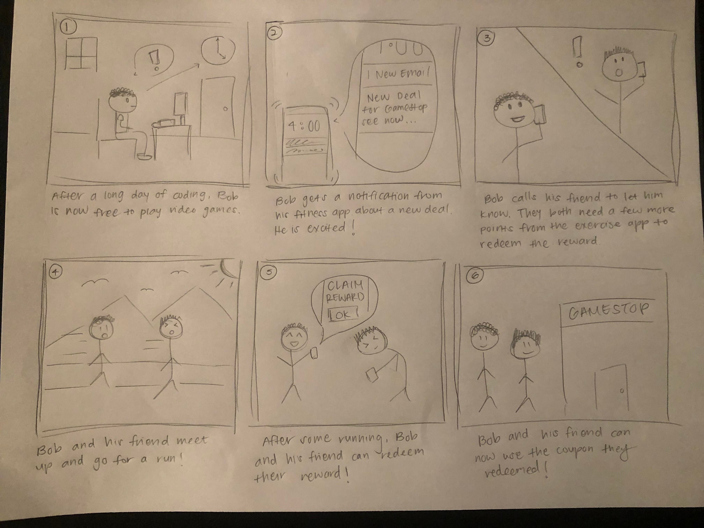
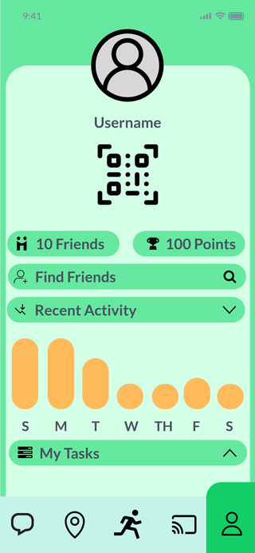

Project Overview
Project Topic
Rewarding users for staying healthy and supporting local businesses
Project Duration
Three months
Programs Used
Marvelapp.com
Design Challenge
With the prolonged onset of the pandemic, work from home and virtual schooling have become standard
in what many call our “new normal”. However, this has led many to sit for hours at a time, putting
them at risk of developing a myriad of health conditions that have been shown to increase overall mortality.
Problem Scope & Impact
So, just how dangerous is sitting for too long?
It turns out that “physical inactivity is now the 4th leading risk factor for global mortality, causing an
estimated 3.2 million deaths a year” (Just Stand).
Studies show that of an average 16-hour waking day, many adults spend about 12.3 hours engaging in sedentary
behavior (CNN Health). That’s about 77% of their day, everyday!
Considering an inactive lifestyle can also lead to an increased risk for obesity, heart disease,
high blood pressure, high cholesterol, stroke, type 2 diabetes, osteoporosis, and other diseases,
sitting for prolonged periods of time will negatively impact the health of millions worldwide (Medline Plus).
Sources:
https://www.juststand.org/
https://www.cnn.com/2017/09/11/health/sitting-increases-risk-of-death-study/index.html
https://medlineplus.gov/healthrisksofaninactivelifestyle.html
Problem Statement & Solution
After some research into the general activity levels of everyday Americans as well as the recommended
activity levels to maintain health, our team settled on the following goal post for our users in our
problem statement.
How can we encourage college students who sit for more than 1.5 hours at a time to walk at least 7
miles (cumulative) per week?
Our solution is an app that focuses on motivating individuals to start exercising by walking or biking
to both avoid users from sitting too long and to help them build healthier habits. In return for
exercising, the app will award users with points they can use to redeem coupons or deals from local businesses.
Market Research
Competitive Analysis
To get a better idea of what solutions already exist, our team decided to conduct a competitive analysis.
We examined a variety of solutions such as mobile apps, gyms, gamification systems, and more. The chart
below depicts what solutions we looked into as well as a summary of our findings. Clicking on the
hyperlinks at the bottom of each column will lead to a more detailed analysis of each solution.
|
Pocket Points |
Pokemon GO |
Crunch Fitness |
Fitness RPG |
| Fitness Tracking |
No |
Yes |
No |
Yes |
| Gamification System |
Yes |
Yes |
No |
Yes |
| Real-World Incentive |
Yes |
No |
No |
No |
| Usage Cost |
Free |
Freemium |
Monthly Subscription |
Freemium |
| Competitive Aspect |
Leaderboard |
Geographic PvP |
No |
PvP |
| Geographical Interaction |
Minor |
Heavy |
In Person |
No |
| Social Aspect |
No |
Friends |
Classes |
Friends |
| Location History |
No |
No |
No |
No |
|
Pocket Points |
Pokemon GO |
Crunch Fitness |
Fitness RPG |
User Research
At first we wanted to target and interview adults who sat for a long period of time as a general group,
however, we soon decided on college students and new graduates as our main demographic. This is largely
because this population would be the most accessible to our team.
Our team interviewed twelve people of varying ages & fitness levels to gather as much information as
possible. Here are some highlights of what we learned from these interviews.

Interview Analysis
To make sense of the information gathered, our team decided to create an Affinity Diagram to search
for common sentiments and experiences from our interviews. Our team decided to use MiroBoard to create
this diagram, which can be explored below.
Key Insights
From the Affinity Diagram, we were able to discover multiple shared themes amongst the interviews which helped
generate and inform our key insights. In addition, our key insights are also supported by academic research
that will be incorporated into our design.
Here is a short summary of our key findings.
Users in Detail
Main User Persona
Now that our team has gathered information about our target demographic and synthesized key insights
to drive our design forward, we created a persona to ensure the solution we are creating will consider
all of the needs, motivations, and feelings of our users.
Solution Development
In developing design ideas for our solution, our team created storyboards, sketches, and various
wireframes to help visualize our app.
Storyboards
We used storyboards to put ourselves in the shoes of our users. We explored various use cases for
our solution and the tool helped visualize the interactions and feelings of users as they used the
solution.
Storyboard One
This storyboard describes a person (Joe) going through the same routine day after day, eventually
becoming tired and bored, with little energy. They look for a way to make themselves feel better
and find our app. They feel better by changing up their routine with exercise.

Storyboard Two
This storyboard describes a person (Bob) who codes for hours everyday at their desk and then plays
video games afterwards to relax. Bob gets a notification from our app about a new coupon and invites
a friend to run with him. After exercising, Bob earns points on our app and is able to claim the new
coupon. He goes to Gamestop with his friend to use the coupon.

Storyboard Three
This storyboard describes a person (Sarah) who has been studying for hours for her midterm with no break.
She usually bikes everyday but feels tired and wants to skip a day. She checks our app and sees that her
friend has a three day exercise streak. Not wanting to lose to her friend, Sarah decides to take a break
and bike for 15 minutes. She earns her own three day streak and is happy about her accomplishments.

Initial Sketches
These are some of the initial sketches that were created for the main functionalities of our app. While
we had some idea of what we wanted from the beginning, we still needed to design additional screens such
as a summarized Homepage for example.
Exercise Log and Point Screens

Coupon Search & Coupon Redemption Screens

High Fidelity Wireframes
The Login Page

This page’s primary focus is to ensure users who don’t have an account, to create one by clicking “New User?”. Moreover, if the user has an existing account they can enter their user name in the “USERNAME” open text box and password in the “PASSWORD” open text box. Once both fields are filled accordingly, the user may click the blue arrow indicating to move forward. If the credentials are valid, the user will be moved to the next screen. If the credentials are not valid, the user may create a new account (“New User?”) or will be prompted to reset credentials. In order to keep this page minimal and unique we decided to feature our core mascot potato as a centerpiece in hopes of drawing attention to new users and creating a user friendly platform.
Exercise Achievements/Rewards Page

You can access this screen by clicking on the center-lower icon. This page serves as a large indicator of a user's personal achievements and rewards. In this page users can track their personal achievements and view various rewarding actions. At the top of this page, users can view their overall achievement status. Below their “Exercise Achievement” lists all types of rewards. In this high-fidelity wireframe “Coupon A”, “Coupon B”, … represent different monetary rewards. In place of these placeholders our product will list all possible discounts to local eateries within a certain distance. Each “Coupon” will have a set amount of points that you can redeem or send to one another. In order to reduce clutter we limited this page to two core features.
The Feed Page

The feed page offers a social aspect that keeps our users engaged and excited to use the application. Outside of just exercising people can use our product as a social outlet to connect, catch up and view other’s public activity. On this page users can view other user’s posts, achievements, who they sent rewards to, other user’s favorite purchases and much more public information. The feed page helps keep our users engaged. By implementing a social aspect we wanted to build a community of users with the same interests.
The Profile Page

The profile page allows users to manage their profile picture, username, friends, points, recent activity and tasks. If chosen, the user may make this page fully private. In order to add friends in person, users can scan one another’s QR Code. If the users intend on adding each other online, they may choose to do so by using the “Find Friends'' tool that helps the user find other people via Username or full name. Moreover, the user may also view their recent activity by week. The chart is a visual for users to interpret how active they have been during the week. “My tasks” allows users to enter any tasks they might have for a given day. “My Tasks” was implemented in order to reduce poor time management.
The Map Page
The map is another useful feature that users may also use to view nearby places that redeem user points. User may use this feature in order to find a nearby restaurant, landmarks that offer bonus points, seasonal hidden points, nearby friends and more. The map encourages users to step outside and earn more points by walking or running to various places.
The Messages Page
Messages include individual direct messages and group messages. In order to meet up with other people with similar goals we have developed a design for users to do so safely. Through our application users may create conversations in order to earn points with or redeem points for each other. Many users may find this feature a great way to meet new people who share common interests.
More Info (Extention of the Map Page)

This action is featured on “My Map”. By clicking the pinned question mark, users can learn more about the business and choose to support local community members. The “more information” action displays the community member who owns the business, their story, the distance the business is away from the user and more background information. Some users will find this useful as they only want to support local shops instead of large franchises or corporations.
New User

After selecting “New User?” users are prompted to create a unique username that is not already in use and a password. After creating and filling out both fields users will be asked to confirm their password
Solution Evaluation
To evaluate whether our proposed solution successfully meets the needs of our potential users, we decided to conduct user evaluations to test our solution design. Each member of our team recruited a user (for a total of 6 users) to complete specific tasks that would give us additional insight into the usability of our design. Here is a brief summary of our findings!
Design Reflection
After receiving the feedback from our user evaluations, our team reflected upon how the design could be improved. First, the design of our app could use additional labeling and guidance. Many users were confused with what certain symbols, graphics, and functions were supposed to represent. Secondly, it occurred to us that a few of our design assets were similar to the ones used in other popular apps. This caused confusion because the same symbols were being used but for different purposes. Lastly, changes to the color scheme, symbol size, and text may be needed to improve overall readability and usability for the user.
Next Steps
Next steps for this project would be to redesign the app in accordance with the feedback we received from the user evaluations and conduct further testing. With the new evaluation results, the design will likely continue to change and improve with additional iterations. In addition, the app should be fleshed out with more details and small features that were not originally included due to the time constraints of this project. Looking farther into the future, it is possible with the right resources that this solution could be fully developed but for the purposes of this project, this is where our design journey ends.
Team Members
Zachary Romero
Megan Chan
Tenzo Chang
Henry Wu
Isabelle Leung
Cechang Cao